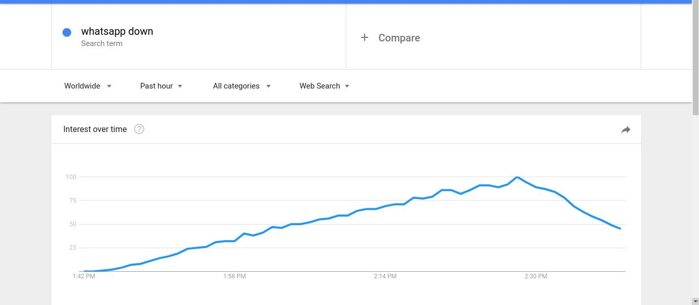

This is my first case study about a recent event “Whatsapp Downtime”.
It was about 1:45 PM, Whatsapp the worlds most popular messaging app went down. Meanwhile this event, I was busy to collect all the data what is happening all around the world right now, due to this event.
So my case study begins, It was around 1:45 PM, People from all over the world started to search about it, the search queries got increased and were at its peak.
PS: Datasource from trends.google.com
Queries were coming from all over the world but highest search index was from Singapore, Brunei, Lebanon.

PS: Datasource from trends.google.com
There were total 42 regions with the highest search index and including lowest search index it was 99.
PS: Datasource from trends.google.com
The most of the queries related to this event was "Is WhatsApp down", "Whatsapp server down", "WhatsApp server", "WhatsApp in down", "WhatsApp status" and "WhatsApp not working"
PS: Datasource from trends.google.com
This all event occurred during 1 hour of time in this era of the internet. The event of WhatsApp downtime got that much viral, it's started to trending on all over social media platforms, including Facebook, Twitter, Google.
PS: Datasource from trends.google.com
PS: Datasource from trends.google.com
Learning from this entire scenario.
I am trying to summarise this event as the prospect of business, peak usability time throughout the daylight.
Basically, I am from India so according to IST, it was 1:45 PM (13:45 according to military time ) when most of the offices, colleges, and homemakers take their lunch break and to relax them self they check WhatsApp updates.
Similarly from all over the world (from where most of the queries came about the "WhatsApp down" ) also had a similar type of office, tea-coffee or snacks break.
PS: Time Comparison Courtesy via https://www.timeanddate.com/worldclock
In past, there were many times when Whatsapp went down in late night, there were no such peak queries or trending were there from the country like India (UTC+05:30), Singapore (UTC+08:00) , Malaysia(UTC+08:00), and Hongkong (UTC+08:00) due to their lowest usage hours.
In this entire scenario, we learned how a simple messaging app became most useful for us, it's connected with our daily life, it makes an impact on our communication and thought process. Whatsapp gave us a way to share our docs, images, videos and important material either we are a Student or a businessman. It's connecting the families, friends, and relatives which lives in another part of the world.
Just 20-30 minute of downtime make us realise how important it is to us, and why Whatsapp deserve to be the number one messaging app for the entire world.
If you faced same situation, please feel free to share your experience and thoughts about it. Don’t forget to like, share, comment. you may also add me on Facebook and can follow me on twitter.
All your reviews, comments, edits are most welcome for this note.
Thank you